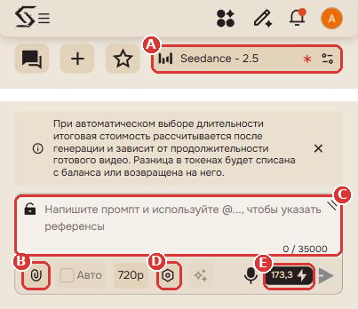
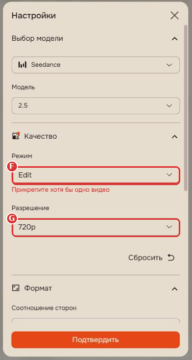
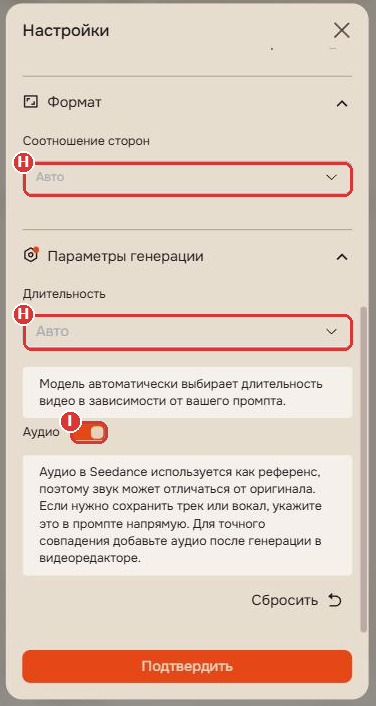

← Frame by Frame · EN | RU · Antonios | AI Videos & Prompts · Instagram @antonios_ai
Step-by-step guide to creating a video
Tap the blue button and sign in with Telegram, Google or Email. Then come back to this guide.
SIGN UP WITH THIS LINK → [INSERT REFERRAL LINK]On a computer?
Scan with your phone camera
Open the shared folder and save these four files to your Files or Downloads before you continue: open the Google Drive folder.
| 01_Image_1_Man.png | Image 1: the main character who runs and jumps (a man in the example) |
| 02_Image_2_Woman.png | Image 2: the character in the background (a woman in the example) |
| 03_Source_Video.mp4 | Source video: vertical 9:16, with the original sound |
| 04_Full_Prompt.txt | The full prompt: you can copy it with the button below, in step 6 |

Screenshots are from the Russian interface. The buttons are in the same places in English.
A red asterisk next to the model name and a hint like “Attach at least one video”? That's normal until you upload the source video (step 5).
Not enough tokens? The generation price is shown next to the send button (E). When I checked on October 14, 2026, it was about 173 tokens in Edit mode, and a new free account had 5.5. You can top up from the profile menu, in the Plans section. Prices and terms change, so check the current ones.


| 1 · 03_Source_Video.mp4 | the whole source video, don't trim it |
| 2 · 01_Image_1_Man.png | Image 1: the main character who runs and jumps |
| 3 · 02_Image_2_Woman.png | Image 2: the character in the background |
Main character first, background character second. The prompt calls them Image 1 and Image 2, so the order matters. The upload window has “Generated” and “Uploaded” tabs, with these limits: up to 30 images, 10 videos and 10 audio files.
Replace the main running and jumping man with the man from @Image 1. Replace the existing background friend with the woman from @Image 2, only where that person already appears. Preserve the source video frame by frame: original shot order, camera movement, framing, rooftop layout, daylight, shadows, motion sequence, and timing. Limit the edit to character identity and clothing, plus removal of existing interface/text overlays. TIMING AND AUDIO — HIGHEST PRIORITY Keep the original action synchronized with the original soundtrack. Every running foot contact, takeoff, airborne rotation, first landing contact, hand/body contact, roll, recovery, and final reaction must occur at the same timestamp as in the source. Use the actual uploaded source frames for the precise takeoff and first landing timestamps. Do not impose timing from another version of the clip. Preserve the source start time and approximately 11.93-second duration. No added lead-in, trailing footage, silent ending, pauses, extra steps, extended flight, repeated actions, or new speed changes. Keep the original audio at its original timestamps and playback speed. Do not move, stretch, regenerate, duplicate, or add sounds. Match the movement to the existing audio. Preserve any original speech, breathing, or vocal reactions, and synchronize visible mouth movements with them. Prioritize original motion timing over any new performance or camera direction. MAIN CHARACTER — @Image 1 Preserve the exact recognizable face, apparent age, hair, hairline, skin tone, facial hair, outfit, colors, fit, and accessories from @Image 1. He is 175 cm tall and weighs 78 kg, with a realistic natural build. No exaggerated muscles, beautification, face drift, or outfit changes. He follows the original protagonist’s poses, path, direction, stride timing, rotation, trajectory, landing, and recovery. BACKGROUND CHARACTER — @Image 2 Preserve the exact recognizable face, apparent age, hair, skin tone, natural slender build, outfit, and accessories from @Image 2. She is 174 cm tall and weighs 57 kg. At comparable distances and postures, the two characters appear nearly equal in height. Use the existing background friend’s position, screen time, and action for the woman from @Image 2. Retain the reference’s existing reaction timing. No new shot, cutaway, reverse angle, extra camera turn, or interruption of the main character’s action to reveal her. OUTPUT Retain full-screen vertical 9:16 framing. Select 1080p output where available. Realistic handheld footage, natural skin texture, consistent daylight and motion blur. No identity blending, duplicate people, distorted anatomy, floating, teleportation, or unexplained position changes. Remove all existing text and interface overlays. No captions, subtitles, logos, watermarks, usernames, stickers, emojis, titles, black bars, or borders. Keep the original action and audio aligned throughout the entire clip. REMOVE EXISTING OVERLAYS Remove the source video's existing social-media interface throughout every frame: the account name at the top, Follow button, AI-content label, Original audio label, and any visible interface icons or text. Restore the underlying sky, rooftop, clothing, or scenery naturally and consistently across frames. Remove the existing overlays themselves, not just newly generated text. No blurred patches, solid boxes, replacement text, ghost lettering, or flickering remnants. Keep the camera framing, action timestamps, clip duration, and audio timing unchanged while removing the overlays.